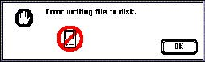
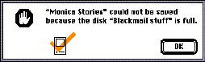
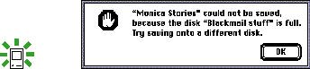
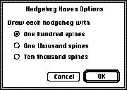
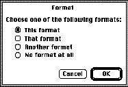

|
Dialog Box MessagesThis section focuses mostly on messages in caution alert boxes and stop alert boxes, but you can apply the principles to messages in other dialog boxes.Dialog boxes and alert boxes communicate to the user. It is your responsibility to make sure that the user can understand what is going on when you can't be there to explain. Dialog box and alert box messages should be descriptive rather than evaluative. When you're writing messages, try to put yourself in the place of your users and imagine how they will feel when confronted with your message. A good alert box message says what went wrong, why it went wrong, and what the user can do about it. Try to express everything in the user's vocabulary. Figure 11-3 shows an example of an alert box message that provides little information and doesn't suggest to the user what is really going on. Figure 11-3 A poorly written alert box message  You could improve this message by describing the problem in the user's vocabulary, as shown in Figure 11-4. Figure 11-4 An improved alert box message  To really make this alert box useful to the user, you need to provide some suggestion about what the user can do to get out of the current situation. Figure 11-5 shows the optimal alert box message for this condition. Figure 11-5 A well-written alert box message  Some dialog boxes include categories of options presented as lists of radio buttons or checkboxes with options. Often a phrase introduces the set of options. Don't include a colon after the phrase that introduces a list if that list is a complement or object of a verb or preposition in the introductory statement. In other words, don't use a colon when the introductory phrase is not a complete sentence and the items in the list complete the sentence. For example, the phrase that follows does not contain a colon: The objects included are
Figure 11-6 Correct absence of a colon to introduce a list of options  Use a colon after an introductory statement that contains the words as follows or the following. Figure 11-7 shows an example of when to use a colon. Figure 11-7 Correct use of a colon  |